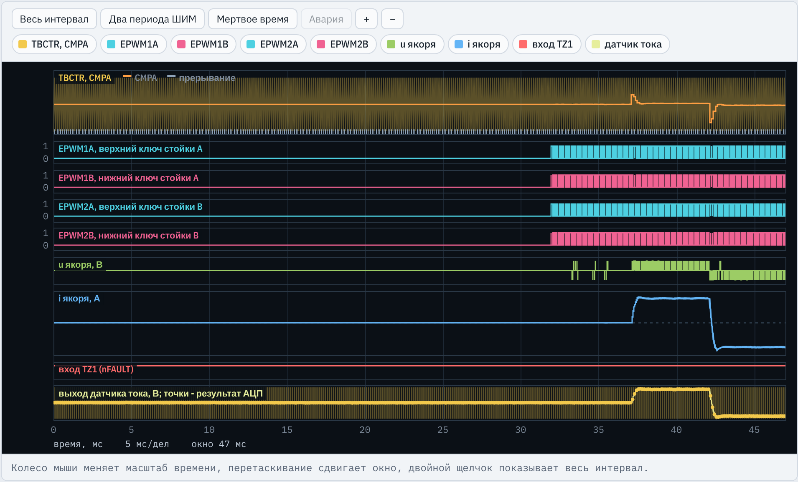
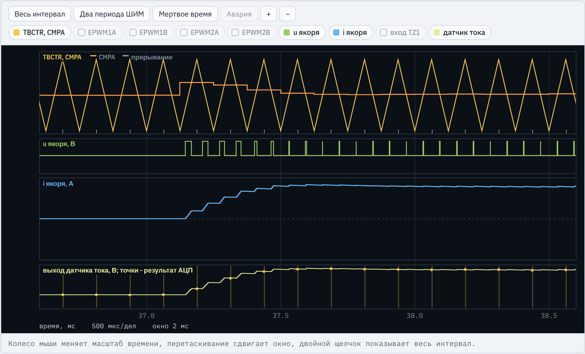
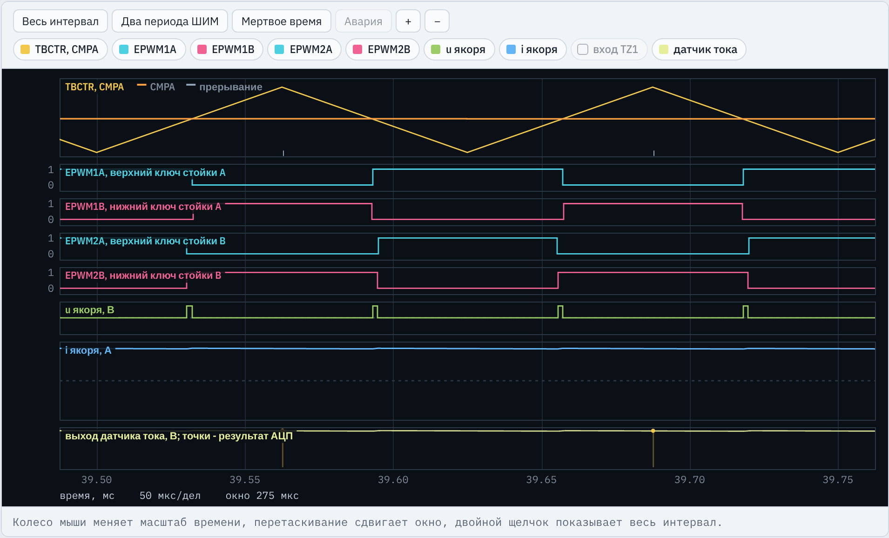
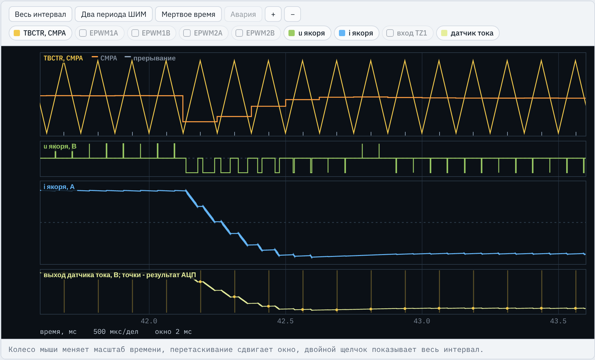

TMS320F2837xD · ЛАБОРАТОРНАЯ РАБОТА № 3
Контур тока двигателя постоянного тока
H-мост с однополярной ШИМ, ПИ-регулятор тока в обработчике прерывания АЦП, ограничение напряжения и условное интегрирование
Третья работа курса. Студенты впервые замыкают контур регулирования: программа сама измеряет ток якоря и в каждом периоде ШИМ пересчитывает заполнение двух стоек H-моста. Все, что сделано в ЛР1 и ЛР2 (ШИМ стойки, мертвое время, nFAULT, АЦП, калибровка нуля, защита), переносится и используется без изменений. Вариант тот же, что в ЛР1 и ЛР2. Все числа в презентации даны для варианта 1 и эталонной программы lr3_reference.c.
Место работы в курсе
Что уже сделано и что добавляется
ЛР1 ШИМ одной стойки: ePWM1, симметричный счет, мертвое время, nFAULT → TZ1
ЛР2 Измерение тока: запуск АЦП от SOCA, калибровка нуля, пересчет в амперы, защита
ЛР3 Контур тока ДПТ: вторая стойка, H-мост, ПИ-регулятор тока
ЛР4 Контур скорости ДПТ: энкодер, регулятор скорости формирует i_ref
Переносится из ЛР1, ЛР2 Определения варианта, InitAdcA(), чтение ADCRESULT0, калибровка нуля, пересчет в ток. Настройка InitEPwm1() становится функцией InitEPwmLeg(p).
Новое в ЛР3 Модуль ePWM2 для стойки B, однополярная модуляция, ПИ-регулятор с ограничением ±Umax и условным интегрированием.
Другой датчик Датчик Холла вместо шунта: ток якоря измеряется при любом состоянии ключей. Ограничение по импульсу нижнего ключа задает теперь драйвер (tbs ).
Номер варианта тот же, что в ЛР1 и ЛР2: частота ШИМ, мертвое время, вывод nFAULT, вход АЦП и окно выборки сохраняются.
Стенд C2000 · ЛР3. Контур тока ДПТ
2 / 24
Подчеркнуть, что в ЛР3 не нужно заново придумывать настройку ePWM и АЦП: она берется из своих программ ЛР1 и ЛР2. Главное изменение в настройке ШИМ: код InitEPwm1() превращается в функцию с параметром-указателем и вызывается для двух модулей. В ЛР2 шунт стоял в нижнем ключе, и ток можно было измерить только при открытом нижнем ключе; датчик Холла включен последовательно с якорем и гальванически развязан, поэтому этого ограничения нет. Но ограничение заполнения остается по другой причине: бутстрепное питание драйвера верхнего ключа. ЛР4 будет использовать контур тока из ЛР3 как внутренний.
Инженерная задача
Зачем приводу контур тока
Момент ДПТ пропорционален току якоря: M = kM ·i. Регулируя ток, программа регулирует момент. Контур тока — внутренний контур подчиненного регулирования: задание i_ref в ЛР4 будет формировать регулятор скорости. Ограничение задания тока защищает двигатель и ключи при пуске, реверсе и перегрузке. Качество контура определяет программа: момент выборки тока, запаздывание обновления CMPA, ограничение напряжения, поведение интегратора на ограничении. Настройка выполняется при заторможенном роторе; ЭДС вращения — медленное возмущение. Требования (вариант 1) Время нарастания до 0,9 при малом скачке — не более 625 мкс (5 периодов ШИМ)ном )
Стенд C2000 · ЛР3. Контур тока ДПТ
3 / 24
Объяснить связь ток–момент: в ДПТ с независимым возбуждением M = kM·i, поэтому быстрый и точный контур тока означает быстрый и точный момент. Почему контур тока внутренний: он самый быстрый (постоянная времени якоря единицы миллисекунд), внешние контуры скорости и положения задают ему ток и через ограничение этого задания ограничивают ток двигателя. Обратить внимание на последний пункт списка: в этой работе студенты увидят, что результат зависит не только от Kp и Ki, но и от того, в какой момент периода ШИМ взят отсчет тока и когда начинает действовать новое значение CMPA. Требования справа взяты из проверок И6, И7 и режимов испытаний.
Объект управления
H-мост, двигатель и сигналы микроконтроллера
VT1 VT2 VT3 VT4
ДТ M
Стойка A · ePWM1 Стойка B · ePWM2
EPWM1A EPWM1B EPWM2A EPWM2B
к ADCINA2
якорь ДПТ
i →
uя = u A − u B
nFAULT драйверов (общий) → GPIO14 → INPUT1 → TZ1 → ePWM1 и ePWM2
A B
Ud Каналы осциллографа EPWM1A, EPWM2A — верхние ключи VT1, VT3 (GPIO0, GPIO2)
EPWM1B, EPWM2B — нижние ключи VT2, VT4 (GPIO1, GPIO3)
u якоря — uA − uB : +Ud , 0 или −Ud , В
i якоря — ток через ДТ и якорь, «+» от A к B, А
датчик тока — 1,65 В + S·i на входе ADCINA2; точки — результаты АЦП
вход TZ1 — сигнал nFAULT, низкий уровень — авария
TBCTR, CMPA — счетчик и уставка ePWM1, отметки вызовов обработчика
Стенд C2000 · ЛР3. Контур тока ДПТ
4 / 24
Стойка A (VT1, VT2) управляется модулем ePWM1 через выводы GPIO0, GPIO1, стойка B (VT3, VT4) — модулем ePWM2 через GPIO2, GPIO3. Якорь включен между средними точками A и B, поэтому напряжение на якоре равно разности потенциалов средних точек и может быть +Ud, 0 или −Ud. Датчик тока на эффекте Холла (ДТ) включен последовательно с якорем: при CS_POL = +1 его выходное напряжение растет при токе от A к B. Его выход подан на вход АЦП ADCINA2 (вариант 1, как в ЛР2). Сигнал аварии драйверов nFAULT общий для обеих стоек: GPIO14 через Input X-BAR (INPUT1) дает сигнал TZ1, который должен быть разрешен в обоих модулях (TZSEL.OSHT1 = 1). Справа — какие каналы осциллографа стенда соответствуют этим сигналам; названия совпадают с подписями кнопок.
Теория
Однополярная ШИМ и момент выборки тока
Обе стойки настроены одинаково: симметричный счет, CAU = AQ_CLEAR, CAD = AQ_SET, одно мертвое время, общий пуск. Заполнение верхних ключей: DA = 0,5 + u*/(2Ud ), DB = 1 − DA ; в регистрах CMPAB = TBPRD − CMPAA . Около TBCTR = 0 открыты оба верхних ключа, около TBCTR = TBPRD — оба нижних: uя = 0. Между ними uя = +Ud при u* > 0. Пульсации тока имеют частоту 2fШИМ , их размах в 4 раза меньше, чем при двухполярной модуляции. АЦП запускается при TBCTR = TBPRD: середина интервала uя = 0, ток равен среднему за период. Вариант 1 Ud = 24 В, fШИМ = 8,0 кГц, TBPRD = 6250A = 0,625, CMPAA = 3906, CMPAB = 2343d /(8Lя fШИМ ) = 0,47 Аd /(2Lя fШИМ ) = 1,88 А
Стенд C2000 · ЛР3. Контур тока ДПТ
5 / 24
Пояснить по рисунку методички (рисунок с двумя периодами). При CAU = AQ_CLEAR и CAD = AQ_SET выход A модуля равен 1, пока TBCTR < CMPA, то есть импульс верхнего ключа центрирован относительно TBCTR = 0, и D = CMPA/TBPRD. Если у стойки B заполнение 1 − DA, то около нуля счетчика открыты оба верхних ключа, около вершины — оба нижних, и в обоих интервалах якорь закорочен (uя = 0). Напряжение +Ud появляется только в двух интервалах между переключениями стоек, поэтому за период ШИМ два импульса напряжения и частота пульсаций тока удваивается. Среднее напряжение (DA − DB)·Ud = u*. Ток в момент TBCTR = TBPRD проходит середину интервала нулевого напряжения и равен среднему за период, поэтому выборка АЦП оставлена там же, где в ЛР2. Числа справа рассчитаны по формулам методички для варианта 1; пример CMPA получен по строкам эталона d = 0.5f + 0.5f*u/UD и приведению к Uint16.
Теория
Структура контура тока и его настройка
Регулятор ПИ: Kp , Ki , условное интегрирование
Мост ШИМ, запаздывание ≈ TШИМ
Якорь Rя , Lя ; ЭДС e — возмущение
Датчик, АЦП i_meas = KАЦП (N − N0 )
Обратная связь замыкается раз в период ШИМ: выборка при TBCTR = TBPRD, новые CMPA действуют с ближайшего TBCTR = 0, через TШИМ /2.
Некомпенсируемая Tμ TШИМ /2 (обновление CMPA) + TШИМ /2 (среднее напряжение ШИМ) = TШИМ = 125 мкс
Технический оптимум Tи = Tя = Lя /Rя ; Kp = Lя /(2Tμ ), Ki = Rя /(2Tμ )
Ожидаемый процесс перерегулирование 4,3 %, время нарастания до 0,9 около 3,8Tμ = 475 мкс
Стенд C2000 · ЛР3. Контур тока ДПТ
6 / 24
Это структурная схема из методички в упрощенном виде. Цифровая система вносит запаздывание: ток измерен при TBCTR = TBPRD, новое задание напряжения начинает действовать с ближайшего TBCTR = 0, то есть через половину периода, и среднее напряжение ШИМ запаздывает еще примерно на половину периода. Это запаздывание представляется некомпенсируемой постоянной времени Tμ = T_ШИМ; постоянная времени датчика (0,6–2 мкс) мала по сравнению с ней. При настройке на технический оптимум интегральная постоянная регулятора компенсирует электромагнитную постоянную якоря (Tя = 3,08 мс для варианта 1), а Kp выбирается так, чтобы замкнутый контур был звеном второго порядка 1/(2Tμ²s² + 2Tμs + 1). Отсюда теоретические 4,3 % перерегулирования. Эталон в испытаниях дает 3,2 % и 3,7 % и время нарастания 438 мкс. Если принять Tμ меньше действительного запаздывания, Kp завышен и перерегулирование быстро растет — это одно из заданий исследования.
Задание 1
Расчет параметров для варианта 1
Ud = 24 В, Iном = 10,5 А, Rя = 0,26 Ом, Lя = 0,80 мГн, kE = 0,115 В·с, J = 0,530 г·м², S = 66 мВ/А, p = +1, tbs = 2,0 мкс, tdt = 220 нс, fШИМ = 8,0 кГц
Величина Формула Значение Где используется KАЦП p·Uоп /(4096·S) 12,207 мА K_ADC, пересчет кода в токDmax 1 − (tbs + tdt )·fШИМ 0,9822 D_MAXUmax (2Dmax − 1)·Ud 23,15 В U_MAX, ограничение регулятораTμ TШИМ 125 мкс T_MUKp Lя /(2Tμ ) 3,20 В/А KPKi Rя /(2Tμ ) 1040 В/(А·с) KIΔiодн Ud /(8Lя fШИМ ) 0,47 А сравнение с осциллограммой t0,9 до Iном Lя ·0,9Iном /(Umax − 0,9Rя Iном ) 365 мкс проверка И9 εe при 0,5Iном kE kM i/(Ki J) 126 мА проверка И12
Стенд C2000 · ЛР3. Контур тока ДПТ
7 / 24
Значения совпадают с ключом вариантов (key.txt, строка 1). Обратить внимание студентов: в программе записываются не числа, а формулы в #define, и их вычисляет компилятор; при смене варианта достаточно поменять исходные данные. Типичные вопросы: почему U_max меньше Ud — потому что импульс нижнего ключа каждой стойки не может быть короче t_bs плюс мертвое время (бутстрепный конденсатор драйвера верхнего ключа заряжается только при открытом нижнем ключе). Знак K_ADC определяется полярностью включения датчика p. Последние три строки нужны не программе, а для сравнения с результатами испытаний: эталон дает время нарастания при большом скачке 563 мкс при допуске 850 мкс (1,3·365 мкс + 3T_ШИМ) и ошибку при разгоне −125 мА.
Что делает студент
Задания методички и что писать самому
Задание Где в программе Что написать Проверка перенос определения ЛР1, ЛР2, InitAdcA(), начало adca1_isr() из своих программ ЛР1, ЛР2: АЦП, чтение кода, калибровка нуля, пересчет в ток И4, И5 1 #define данных ЛР3данные варианта и формулы K_ADC, D_MAX, U_MAX, T_MU, KP, KI расчет в отчете 2 InitEPwmGpio()GPIO2, GPIO3 — выходы EPWM2A, EPWM2B без подтяжки каналы EPWM2A/B 3 InitEPwmLeg(), main()настройка стойки через указатель p, вызов для ePWM1 и ePWM2, SOCA от ePWM1 И1, И2, И4 4 PwmTrip(), PwmEnable()отключение и включение обеих стоек И13 5 adca1_isr()ПИ-регулятор, ограничение ±Umax , условное интегрирование И6–И10 6 adca1_isr()CMPA стоек A и B для однополярной модуляции И3, И11 7, 8 adca1_isr()сброс ADCINT1 и PIEACK; защита по току и насыщению АЦП И13, И15
Результат: программа, которая проходит 15 проверок И1–И15, протокол приемки, результаты исследования и отчет.
Стенд C2000 · ЛР3. Контур тока ДПТ
8 / 24
В заготовке lr3_student.c все места для работы помечены словом ЗАДАНИЕ с номером, а места для переноса — словами «Перенести из своей программы ЛР2». Заготовка компилируется и запускается, но регулятор в ней выдает u = 0, стойка B не подключена, и функции PwmTrip()/PwmEnable() пустые. Новое по существу — задания 3, 5 и 6; задания 2, 4, 7, 8 повторяют ЛР1 и ЛР2 с поправкой на вторую стойку. Обратить внимание: определения ЛР1, ЛР2 в заготовке заполнены условными значениями (10 кГц и т. д.), их обязательно заменить на свои — иначе И1, И2, И4 не пройдут.
Структура программы
main() настраивает, работа выполняется в прерывании
Периферия InitSysCtrl(), выводы ePWM, вход nFAULT, АЦП
PIE вектор adca1_isr в PieVectTable
Стойки TBCLKSYNC = 0, InitEPwmLeg ×2, SOCA от ePWM1
Пуск PwmTrip(), TBCLKSYNC = 1, разрешение INT1
Фоновый цикл for(;;) пустой; adca1_isr 8000 раз в секунду
ST_CAL 256 периодов (32 мс): выходы отключены, накопление кода, N0 = сумма/256. В конце: xi = 0, PwmEnable().
ST_RUN Пересчет кода в i_meas, защита, ПИ-регулятор, запись CMPA обеих стоек.
ST_FAULT Обе стойки отключены, регулятор не вычисляется. Состояние сохраняется до перезапуска.
Стенд C2000 · ЛР3. Контур тока ДПТ
9 / 24
Последовательность main() та же, что в ЛР2; добавлен только второй вызов InitEPwmLeg. Порядок важен: модули настраиваются при остановленных счетчиках (TBCLKSYNC = 0), выходы отключаются программным однократным отключением до пуска, затем оба счетчика запускаются одной записью TBCLKSYNC = 1. Вся работа происходит в обработчике прерывания АЦП: он вызывается по окончании преобразования, запущенного событием SOCA модуля ePWM1 при TBCTR = TBPRD, то есть один раз в период ШИМ. Обработчик — автомат из трех состояний в переменной state. В режиме калибровки выходы отключены, ток через якорь равен нулю, и среднее значение кода дает нулевой уровень датчика со смещением.
Задание 1
Данные варианта и расчетные константы
lr3_reference.c, определения (вариант 1; комментарии в конце строк сокращены)
#define UD 24.0f
#define R_A 0.260f
#define L_A 8.000e-4f
#define HALL_S 0.066f
#define CS_POL (1.0f)
#define T_BS 2.00e-6f
#define I_TRIP 15.8f Данные варианта в единицах СИ: В, Ом, Гн, В/А, с, А. CS_POL = +1: напряжение датчика растет при токе от стойки A к стойке B.
#define K_ADC (CS_POL * (3.3f / 4096.0f) / HALL_S) Ампер на единицу кода: 3,3 В / 4096 / 0,066 В/А = 12,207 мА; знак полярности входит в коэффициент.
#define T_DT (DEADBAND_TCK * 10.0e-9f)
#define D_MAX (1.0f - (T_BS + T_DT) * FSW_HZ)
#define U_MAX ((2.0f * D_MAX - 1.0f) * UD) Импульс нижнего ключа не короче tbs : Dmax = 0,9822, Umax = 23,15 В, а не 24 В (И11).
#define T_MU TS
#define KP (L_A / (2.0f * T_MU))
#define KI (R_A / (2.0f * T_MU)) Технический оптимум при Tμ = TШИМ : Kp = 3,20 В/А, Ki = 1040 В/(А·с).
Стенд C2000 · ЛР3. Контур тока ДПТ
10 / 24
Определения ЛР1 и ЛР2 (FSW_HZ = 8000.0f, TBPRD_VAL = 6250, DEADBAND_TCK = 22, FAULT_GPIO = 14, ADC_CH = 2, ACQPS_VAL = 30) переносятся из своих программ и здесь не показаны. TS = 1/FSW_HZ уже есть в заготовке. Почему формулы, а не числа: компилятор вычислит их сам, ошибка округления исключена, а при смене варианта меняются только исходные данные. T_DT считается из числа тактов мертвого времени: такт EPWMCLK 10 нс. Множитель в T_MU студенты будут менять в исследовании (от 0,5 до 3), поэтому T_MU вынесена отдельным определением. Типовые ошибки: U_MAX = UD (не проходит И11), неверный знак CS_POL (положительная обратная связь, не проходят И3, И5–И12).
Задания 2 и 3
Выводы стойки B, две стойки, запуск АЦП
lr3_reference.c, InitEPwmGpio() и main()
GpioCtrlRegs.GPAPUD.bit.GPIO2 = 1;
GpioCtrlRegs.GPAPUD.bit.GPIO3 = 1;
// ...
GpioCtrlRegs.GPAMUX1.bit.GPIO2 = 1; // EPWM2A - верхний ключ стойки B
GpioCtrlRegs.GPAMUX1.bit.GPIO3 = 1; // EPWM2B - нижний ключ стойки B Подтяжка отключена, функция 1 — выходы модуля ePWM2.
InitEPwmLeg(&EPwm1Regs); // стойка A
InitEPwmLeg(&EPwm2Regs); // стойка B Одна функция для обеих стоек: настройки не расходятся. Вызов при TBCLKSYNC = 0.
EPwm1Regs.ETSEL.bit.SOCAEN = 1;
EPwm1Regs.ETSEL.bit.SOCASEL = ET_CTR_PRD;
EPwm1Regs.ETPS.bit.SOCAPRD = ET_1ST; Запуск АЦП только от ePWM1, при TBCTR = TBPRD, в каждом периоде (И4).
EALLOW;
CpuSysRegs.PCLKCR0.bit.TBCLKSYNC = 1; // одновременный пуск обоих счетчиков
EDIS; Общий пуск: моменты TBCTR = 0 модулей совпадают (И1).
Стенд C2000 · ЛР3. Контур тока ДПТ
11 / 24
Задание 2 повторяет ЛР1 для двух других выводов. Задание 3: если настроить ePWM2 отдельной копией кода, легко получить расхождение (другой период, другое мертвое время), поэтому настройка оформлена функцией с параметром — указателем на структуру регистров модуля. Обе стойки настраиваются при TBCLKSYNC = 0 (эта запись стоит в main() перед вызовами) и запускаются одновременно записью TBCLKSYNC = 1. Если счетчики сдвинуты, импульсы стоек не центрированы относительно общего нуля, среднее напряжение на якоре не равно заданию и появляются интервалы обратной полярности. Поля ETSEL/ETPS задаются только для ePWM1: второй источник запуска АЦП не нужен. Типовая ошибка из исследования: SOCASEL = ET_CTR_ZERO — выборка в момент TBCTR = 0, запаздывание растет до 1,5 периода, не проходят И4, И6, И8.
Задание 3
Функция настройки стойки InitEPwmLeg(p)
lr3_reference.c, InitEPwmLeg(): перенос InitEPwm1() из ЛР2, EPwm1Regs.поле → p->поле
void InitEPwmLeg(volatile struct EPWM_REGS *p)
{
p->TBPRD = TBPRD_VAL;
p->TBCTR = 0;
p->TBCTL.bit.CTRMODE = TB_COUNT_UPDOWN; p — адрес EPwm1Regs или EPwm2Regs. Одинаковый период, симметричный счет.
// ...
p->CMPCTL.bit.LOADAMODE = CC_CTR_ZERO;
p->CMPA.bit.CMPA = TBPRD_VAL / 2;
p->AQCTLA.bit.CAU = AQ_CLEAR;
p->AQCTLA.bit.CAD = AQ_SET; CMPA из теневого регистра при TBCTR = 0. Начальное заполнение 0,5: uя = 0. Верхний ключ открыт при TBCTR < CMPA.
// ...
p->DBRED.bit.DBRED = DEADBAND_TCK;
p->DBFED.bit.DBFED = DEADBAND_TCK;
// ...
p->TZSEL.bit.OSHT1 = 1; Мертвое время 22 такта (220 нс) в обеих стойках (И2). nFAULT (TZ1) отключает каждый модуль (И14).
Стенд C2000 · ЛР3. Контур тока ДПТ
12 / 24
Полный текст функции — 30 строк настройки из InitEPwm1() программы ЛР2: TBCTL (симметричный счет, без фазовой синхронизации, теневой период, без деления частоты), CMPCTL (теневой CMPA с загрузкой при TBCTR = 0), AQCTLA, DBCTL с DBRED = DBFED = DEADBAND_TCK, TZCTL (TZA, TZB = TZ_FORCE_LO), TZSEL.OSHT1 = 1, сброс TZCLR — защищенные регистры между EALLOW и EDIS. Здесь показаны строки, важные для двух стоек. Загрузка CMPA при TBCTR = 0 означает, что значения, записанные обработчиком после выборки при TBCTR = TBPRD, начнут действовать в обеих стойках одновременно через половину периода. Типовая ошибка: в ePWM2 не разрешен TZSEL.OSHT1 — при сигнале nFAULT стойка B продолжает переключаться (И14).
Задание 4
Отключение и включение обеих стоек
lr3_reference.c, PwmTrip(), PwmEnable(), main()
void PwmTrip(void)
{
EALLOW;
EPwm1Regs.TZFRC.bit.OST = 1;
EPwm2Regs.TZFRC.bit.OST = 1;
EDIS;
} Программное однократное отключение: выходы в состоянии TZCTL, все четыре ключа закрыты.
EPwm1Regs.TZCLR.bit.OST = 1;
EPwm2Regs.TZCLR.bit.OST = 1;
EPwm1Regs.TZCLR.bit.INT = 1;
EPwm2Regs.TZCLR.bit.INT = 1; PwmEnable(): снять отключение и флаг INT обоих модулей (между EALLOW и EDIS).
PwmTrip(); // выходы отключены до окончания калибровки В main() до пуска счетчиков; включение — в конце калибровки.
Стенд C2000 · ЛР3. Контур тока ДПТ
13 / 24
TZFRC и TZCLR — защищенные регистры, поэтому запись только между EALLOW и EDIS (проверка И15). Почему отключать обе стойки: если отключить только стойку A, стойка B продолжает переключаться, и при открытых ключах B якорь остается под напряжением через диоды стойки A; проверка И13 в режиме E (задание 1,25·I_max) выявляет это. Выходы должны быть отключены на всю калибровку: при включенных ключах через якорь шел бы ток, и нулевой уровень датчика был бы измерен с ошибкой. На осциллограмме видно, что выходы включаются через 31,9 мс — после 256 периодов калибровки.
Перенос из ЛР2, задание 8
Обработчик: калибровка, пересчет, защита
lr3_reference.c, adca1_isr()
adc_code = AdcaResultRegs.ADCRESULT0;
// ...
offset_code = cal_sum / CAL_N;
xi = 0.0f;
state = ST_RUN;
PwmEnable();
// ... Как в ЛР2: 256 кодов, их среднее — N0 . Новое: обнуление xi и включение обеих стоек.
i_meas = ((float)adc_code - offset_code) * K_ADC; iизм = KАЦП (N − N0 ), А.
if (state == ST_RUN && (fabsf(i_meas) > I_TRIP || adc_code == 0 || adc_code == 4095))
{
PwmTrip();
state = ST_FAULT;
} Превышение 15,8 А или код на границе диапазона: обе стойки отключены (И13).
Стенд C2000 · ЛР3. Контур тока ДПТ
14 / 24
Чтение результата, калибровка и пересчет переносятся из ЛР2 почти без изменений. Добавлены две вещи: при окончании калибровки обнуляется интегральная составляющая xi (регулятор начинает с нуля) и вызывается PwmEnable(), включающая обе стойки. Коды 0 и 4095 означают насыщение АЦП: настоящий ток может быть больше, чем позволяет измерить диапазон, поэтому это тоже авария. Программная защита сравнивает ток в момент выборки, который близок к среднему за период, поэтому она реагирует на средний ток и не видит пиков пульсаций; защита от короткого замыкания будет аппаратной (ЛР9, CMPSS). В эталоне при задании 19,8 А обе стойки отключаются через 63 мкс после превышения уставки средним током, пиковый ток 16,8 А.
Задание 5
ПИ-регулятор с условным интегрированием
lr3_reference.c, adca1_isr(), состояние ST_RUN
e = i_ref - i_meas;
u = KP * e + xi; Ошибка, А. Задание напряжения: uk = Kp εk + xk−1 , В.
if (u > U_MAX) { u = U_MAX; if (e < 0.0f) xi += KI * TS * e; } На ограничении сверху интегрировать только при ε < 0: насыщение уменьшается.
else if (u < -U_MAX) { u = -U_MAX; if (e > 0.0f) xi += KI * TS * e; } Снизу симметрично: только при ε > 0.
else { xi += KI * TS * e; } xk = xk−1 + Ki TШИМ εk ; Ki TШИМ = 0,13 В/А.
Задание напряжения для вывода на осциллограф.
Стенд C2000 · ЛР3. Контур тока ДПТ
15 / 24
Это дискретная форма формулы (6) методички с шагом T_ШИМ. Пропорциональная часть использует ошибку текущего периода, интегральная — значение, накопленное к предыдущему периоду, затем интеграл обновляется. Множитель TS обязателен: без него интегральный коэффициент в 8000 раз больше и контур неустойчив (типовая ошибка, не проходят И3, И6–И10, И12). Условное интегрирование: когда выход ограничен, обычный интегратор продолжал бы накапливать ошибку, хотя напряжение на якоре от этого не меняется; после снятия ограничения накопленное значение долго удерживало бы напряжение на пределе. Это проверяет режим G: разгон с током 10,5 А до выхода на ограничение, затем задание −10,5 А. Эталон достигает −0,9 Iном за 438 мкс при допуске 2004 мкс; без условного интегрирования И10 не проходит. Переменную u_ref можно выбрать на вкладке «Переменные» для вывода на осциллограф.
Задания 6 и 7
Однополярная модуляция и завершение обработчика
lr3_reference.c, adca1_isr()
d = 0.5f + 0.5f * u / UD; DA = 0,5 + u*/(2Ud ). При |u| ≤ Umax : 0,0178 ≤ d ≤ 0,9822.
EPwm1Regs.CMPA.bit.CMPA = (Uint16)(d * TBPRD_VAL);
EPwm2Regs.CMPA.bit.CMPA = (Uint16)((1.0f - d) * TBPRD_VAL); Стойка A — d, стойка B — 1 − d. Значения начнут действовать с ближайшего TBCTR = 0.
AdcaRegs.ADCINTFLGCLR.bit.ADCINT1 = 1;
PieCtrlRegs.PIEACK.all = PIEACK_GROUP1; В каждом вызове, вне if: иначе следующие прерывания не придут (И15).
Пример: u = 6 В → d = 0,625, CMPAA = 3906, CMPAB = 2343. Сумма заполнений стоек равна 1.
Стенд C2000 · ЛР3. Контур тока ДПТ
16 / 24
Почему d и 1 − d: при одинаковых действиях AQ у обеих стоек это дает однополярную модуляцию (см. слайд теории). Типовые ошибки: одинаковые CMPA обеих стоек — стойки переключаются синхронно, напряжение на якоре почти всегда ноль, ток не регулируется (не проходят И3, И6–И9, И12); противофазная стойка B (CAU = AQ_SET, CAD = AQ_CLEAR) с одинаковыми CMPA — двухполярная модуляция, пульсации в 4 раза больше (И3, И11). Ограничение |u| ≤ U_max гарантирует, что и d, и 1 − d лежат в пределах от 1 − D_max до D_max, то есть импульс нижнего ключа обеих стоек не короче t_bs. Сброс флага ADCINT1 и подтверждение группы PIE стоят в конце обработчика вне всех условий: они нужны и в состоянии калибровки, и в состоянии аварии.
Осциллограф
Общий вид: калибровка и два скачка задания

TBCTR, CMPA — счетчик ePWM1 (сплошная полоса) и CMPA стойки A: всплески при 37 и 42 мс
EPWM1A … EPWM2B — ключи обеих стоек: 0 до 31,9 мс (калибровка), затем переключаются
i якоря — 0, затем +2,7 А с 37 мс и −2,7 А с 42 мс
вход TZ1 — nFAULT, высокий уровень: аварии нет
датчик тока — 1,65 В + 0,066 В/А·i; точки — коды АЦП
Обычный запуск: ротор заторможен, задание как в режиме A.
Стенд C2000 · ЛР3. Контур тока ДПТ
17 / 24
Снимок сделан на эталонной программе, вариант 1, кнопка «Весь интервал» (47 мс). Что показать: первые 32 мс выходы всех четырех ключей равны нулю — идет калибровка нуля датчика (256 периодов ШИМ по 125 мкс); в это время ток якоря равен нулю, а точки АЦП на канале «датчик тока» лежат на нулевом уровне датчика. При 31,9 мс обе стойки включаются одновременно. При 37 мс задание i_ref меняется на +2,7 А (это малый испытательный скачок I1 варианта 1), при 42 мс — на −2,7 А. Ток якоря повторяет задание, выход датчика повторяет ток. На масштабе всего интервала счетчик TBCTR сливается в полосу, видны только скачки CMPA в моменты смены задания. Подробности — на следующих снимках.
Осциллограф, увеличение
Скачок задания 0 → 2,7 А

TBCTR, CMPA — треугольный счетчик ePWM1, CMPA стойки A (оранжевая), отметки вызовов обработчика внизу
u якоря — импульсы +Ud = 24 В, широкие в первые периоды
i якоря — нарастает ступенями: растет при +Ud , постоянен при 0
датчик тока — точки АЦП в вершинах счетчика
Задание меняется при 37,0 мс. Новое CMPA вычислено в ближайшем вызове и действует с TBCTR = 0 (около 37,12 мс). Ток доходит до 0,9 задания за 438 мкс, перерегулирование 3,2 % (И6).
Стенд C2000 · ЛР3. Контур тока ДПТ
18 / 24
Окно 36,6–38,6 мс. Хорошо видна цепочка запаздываний: задание меняется в произвольный момент, обработчик вызывается после выборки при TBCTR = TBPRD (отметки под счетчиком), вычисляет новое u и записывает CMPA в теневой регистр; новое значение загружается при ближайшем TBCTR = 0. В первом периоде регулятор задает около 8,6 В (Kp·2,7 А), CMPA поднимается примерно до 0,68·TBPRD — это видно по оранжевой линии; на ограничение 23,15 В регулятор при малом скачке не выходит. Далее ошибка уменьшается, CMPA опускается к значению, близкому к половине периода. В установившемся режиме нужно только R·I ≈ 0,7 В плюс компенсация мертвого времени, поэтому импульсы напряжения узкие. Точки АЦП на канале датчика лежат в серединах горизонтальных участков: выборка в середине интервала нулевого напряжения дает средний ток. Числа 438 мкс и 3,2 % — результат проверки И6 эталона.
Осциллограф, увеличение
Два периода ШИМ при токе +2,7 А

TBCTR, CMPA — CMPA немного выше TBPRD/2: u* > 0
EPWM1A, EPWM2A — оба верхних ключа открыты около TBCTR = 0
EPWM1B, EPWM2B — оба нижних открыты около TBCTR = TBPRD
u якоря — 0 и +24 В, четыре импульса за два периода
датчик тока — выборка в вершине счетчика
Стойки переключаются почти одновременно, но в разные стороны; напряжение на якоре — разность. Обратной полярности нет (И3: 0,0 %, +Ud 2,9 % времени).
Стенд C2000 · ЛР3. Контур тока ДПТ
19 / 24
Кнопка «Два периода ШИМ», около 39,5 мс, установившийся ток +2,7 А. Сравнить с рисунком однополярной ШИМ в методичке. При движении счетчика вверх сначала переключается стойка B (у нее CMPA меньше), затем стойка A; между этими моментами верхний ключ A и нижний ключ B открыты, и uя = +Ud. При движении вниз — наоборот. Поэтому импульсов напряжения два на период, частота пульсаций тока 16 кГц. Импульсы узкие, так как среднее напряжение мало: 2,9 % времени по +24 В дают около 0,7 В, что равно R·I = 0,26·2,7. Пульсации тока при таком малом напряжении почти не видны; наибольший размах при однополярной модуляции 0,47 А получается при u* = Ud/2. Отметки прерывания и точки АЦП стоят в вершинах счетчика, в середине интервала, когда открыты оба нижних ключа. Мертвое время 220 нс на этом масштабе не различимо, его проверяет И2.
Осциллограф, увеличение
Скачок задания 2,7 → −2,7 А

TBCTR, CMPA — CMPA стойки A опускается ниже TBPRD/2: u* < 0
u якоря — импульсы −Ud , широкие в первые периоды
i якоря — спадает ступенями от +2,7 до −2,7 А
датчик тока — напряжение датчика ниже 1,65 В при i < 0
Скачок 5,4 А: время нарастания 438 мкс, перерегулирование 3,7 % (И6). Установившаяся ошибка −3 мА (И7).
Стенд C2000 · ЛР3. Контур тока ДПТ
20 / 24
Окно 41,6–43,6 мс. Задание меняется при 42,0 мс. Ошибка в первом периоде −5,4 А, регулятор задает около −17 В (Kp·5,4 А за вычетом накопленных 0,7 В), это еще не ограничение. Напряжение на якоре теперь принимает значения 0 и −Ud. После небольшого перерегулирования видны два положительных импульса: регулятор возвращает ток к заданию. В установившемся режиме импульсы снова узкие, но отрицательные: нужно около −0,7 В. Отметить, что форма процесса при отрицательном скачке такая же, как при положительном: контур линейный, пока регулятор не выходит на ограничение. Большой скачок до 10,5 А, при котором регулятор выходит на ограничение 23,15 В, проверяется в режиме C (И9), эталон: 563 мкс при оценке 365 мкс и допуске 850 мкс.
Приемочные испытания
Проверки И1–И8
Режимы: A — скачки ±2,7 А; B — Rя +30 %, Lя −25 %; C — 0 → 10,5 → 0 А; D — пуск, 5,3 А; E — задание 19,8 А; F — импульс nFAULT; G — разгон до ограничения и −10,5 А.
№ Что проверяется Требование (вариант 1) Зачем Эталон И1 частота ШИМ, синхронизация стоек 8,000 кГц ± 0,1 %; TBCTR = 0 модулей расходятся не более 10 нс иначе среднее uя не равно u* синхронны И2 мертвое время, сквозной ток 220…320 нс в обеих стойках ключи стойки не открыты одновременно 220 нс И3 однополярная модуляция при i > 0 обратная полярность не более 1,7 % времени отличает от двухполярной ШИМ 0,0 % И4 измерительный канал АЦП при TBCTR = TBPRD ± 50 нс, ADCINA2, окно ≥ 155 нс, вызов раз в период ток берется в середине интервала uя = 0 376 вызовов И5 погрешность измерения систематическая ≤ 125 мА, наибольшая ≤ 0,50 А смещение нуля 10…25 мВ откалибровано 3 мА; 0,058 А И6 переходная характеристика перерегулирование ≤ 10 %, t0,9 ≤ 625 мкс настройка на технический оптимум 3,2 и 3,7 %; 438 мкс И7 установившаяся ошибка ≤ 210 мА (2 % Iном ) работает интегральная часть 1 и −3 мА И8 отклонение параметров якоря перерегулирование ≤ 20 %, ошибка ≤ 210 мА запас при неточных Rя , Lя 8,0 и 8,5 %; 52 мА
Стенд C2000 · ЛР3. Контур тока ДПТ
21 / 24
Испытания запускаются на вкладке «Приемка», полный прогон около минуты. В каждом режиме смещение нуля датчика (10–25 мВ неизвестного знака) и разброс чувствительности свои, поэтому калибровка обязательна. Показатели переходных процессов считаются по току якоря, усредненному за каждый период ШИМ. Столбец «Эталон» — результат прогона lr3_reference.c на варианте 1 (15 из 15). Обратить внимание на И8: при L меньше расчетной на 25 % Kp оказывается завышенным относительно оптимума, и перерегулирование растет до 8–9 %; допуск 20 %. И4 выявляет запуск АЦП при TBCTR = 0 и неверный вход.
Приемочные испытания
Проверки И9–И15
№ Что проверяется Требование (вариант 1) Зачем Эталон И9 большой скачок (режим C) 0 → 10,5 А: перерегулирование ≤ 10 %, t0,9 ≤ 850 мкс, без отключения регулятор на ограничении Umax −0,5 %; 563 мкс И10 выход из насыщения (режим G) после смены 10,5 → −10,5 А ток достигает −9,45 А не позднее 2004 мкс условное интегрирование 438 мкс И11 ограничение напряжения импульс нижнего ключа каждой стойки ≥ 2,0 мкс в каждом периоде заряд бутстрепного конденсатора 2,00 мкс И12 вращающийся двигатель (режим D) ошибка тока ≤ 315 мА при нарастании ЭДС ЭДС — медленное возмущение −125 мА И13 включение выходов, защита отключены при калибровке, включены до 36 мс; при i > 15,8 А обе стойки отключены за 2 периода безопасный пуск и перегрузка 31,9 мс; 63 мкс И14 сигнал аварии драйверов (F) все 4 ключа закрыты за 0,2 мкс и остаются закрытыми TZ1 разрешен в обоих модулях 0,01 мкс И15 правила программирования EALLOW/EDIS, сброс ADCINT1 и PIEACK в каждом вызове, переменные i_ref, i_meas иначе прерывания прекращаются нарушений нет
Стенд C2000 · ЛР3. Контур тока ДПТ
22 / 24
И9: при скачке до номинального тока регулятор сразу выходит на ограничение 23,15 В, ток нарастает со скоростью, ограниченной напряжением; допуск — 1,3 оценки по формуле (9) плюс 3 периода ШИМ. И10, режим G: двигатель со свободным ротором разгоняется током 10,5 А, ЭДС растет, и примерно через 0,1 с регулятор выходит на ограничение; задание −10,5 А подается при 141 мс. Эталон в режиме G находился на ограничении 12,1 мс до смены задания. И12, режим D: при разгоне ток отстает от задания на величину (de/dt)/Ki, расчет 126 мА, эталон −125 мА. И13 в режиме E: вышестоящий контур задает 19,8 А (1,25·I_max), регулятор доводит средний ток до уставки 15,8 А, и защита отключает обе стойки. И14: аппаратное отключение через TZ1 занимает доли микросекунды и не зависит от программы, если TZSEL.OSHT1 разрешен в обоих модулях.
Типовые ошибки
Ошибка и проверка, которая ее выявляет
Ошибка Что происходит Проверки стойка B в противофазе двухполярная ШИМ, uя = ±Ud , пульсации в 4 раза больше И3, И11 одинаковые CMPA стоек стойки переключаются вместе, uя ≈ 0, ток не регулируется И3, И6–И9, И12 в ePWM2 нет TZSEL.OSHT1 при nFAULT стойка B продолжает работать И14 T_MU = TШИМ /2 или 4TШИМ Kp завышен или занижен И6, И8, И9 (И12) П-регулятор, KI = 0 статическая ошибка тока И9, И12 KI * e без TSKi в 8000 раз больше, колебания И3, И6–И10, И12 безусловное интегрирование после ограничения напряжение долго на пределе И10 U_MAX = UDимпульс нижнего ключа короче tbs И11 неверный знак CS_POL положительная обратная связь И3, И5–И12 ET_CTR_ZEROвыборка при TBCTR = 0, запаздывание 1,5TШИМ И4, И6, И8 нет калибровки нуля смещение до 25 мВ — ошибка до 0,38 А И5–И9 PwmTrip() только для стойки Aзащита не отключает стойку B И13
Стенд C2000 · ЛР3. Контур тока ДПТ
23 / 24
Список взят из материалов для преподавателя и файла типовых ошибок lr3_cases.js: каждая ошибка внесена в эталон и прогнана через приемку (для варианта 3). Полезно при разборе протокола студента: по набору непройденных проверок можно сразу предположить причину. Например, одновременный отказ И3 и И5–И12 почти всегда означает неверную полярность датчика; отказ только И10 — безусловное интегрирование; отказ только И11 — ограничение по Ud вместо U_max. Ошибка в 0,38 А без калибровки: 25 мВ / 0,066 В/А для варианта 1.
Порядок выполнения
Как выполнять работу
Вкладка «Приемка»: ЛР3 и свой вариант. Кнопка «Заготовка ЛР3», сохранить в свой файл. Перенести определения ЛР1, ЛР2, InitAdcA(), чтение, калибровку и пересчет из ЛР2. Задание 1: расчет и определения. Задания 2–4: выводы, InitEPwmLeg, отключение стоек — проверить вкладку «Измерения» и каналы EPWM2A/B. Задания 5–8: регулятор, CMPA, завершение обработчика, защита — проверить «Два периода ШИМ» и u_ref. Приемочные испытания (около минуты), устранить несоответствия, сохранить протокол. Исследование: Tμ от 0,5TШИМ до 3TШИМ и запуск АЦП при TBCTR = 0; двухполярная модуляция; безусловное интегрирование (режим G); ошибка тока при разгоне (режим D). Отчет: расчет, текст программы, протокол, результаты исследования, выводы. Стенд C2000 · ЛР3. Контур тока ДПТ
24 / 24
Рекомендовать студентам идти по заданиям по порядку и после каждого запускать модель: ошибки в настройке стойки B видны сразу на вкладке «Измерения» (частота ШИМ, мертвое время обеих стоек) и на осциллографе, до того как будет написан регулятор. Если протокол показывает несоответствие, нужно вывести на осциллограф соответствующий режим испытаний и найти причину по таблице типовых ошибок. Выводы в отчете формулируются как полученные результаты: показатели контура, соответствие требованиям, зависимость перерегулирования от Tμ, во сколько раз однополярная модуляция уменьшает пульсации, к чему приводит насыщение интегратора. Исследование: пример зависимости от Tμ для варианта 1 есть на рисунке в методичке; при Tμ = 0,5·T_ШИМ перерегулирование доходит до 30–40 %, при больших Tμ процесс медленнее. Опыт с ET_CTR_ZERO: выборка при TBCTR = 0, CMPA тоже загружается при TBCTR = 0, поэтому новое значение действует только через период — запаздывание 1,5 периода вместо одного. Двухполярная модуляция: стойка B с CAU = AQ_SET, CAD = AQ_CLEAR и тем же CMPA, что у A; расчетный размах пульсаций 1,88 А против 0,47 А; объясняет проверку И3. Насыщение интегратора: в режиме G без условного интегрирования накопленная xi держит напряжение у +U_max после смены задания, переменную xi вывести на осциллограф через вкладку «Переменные». ЭДС: расчетная ошибка 126 мА, эталон −125 мА. Ответы на контрольные вопросы — в teacher_answers.txt.